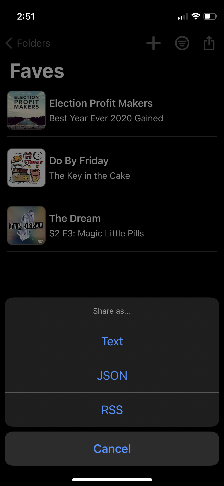

[⬅ Back](./index.html)
---
# Creating your own podcast feed
[Podmark](https://apps.apple.com/us/app/podmark/id1546743310) allows you to bookmark podcasts. Once you have a list, you can export that list as text, JSON, or RSS.
I use the RSS export to create my own Podcast feed of my favorite episodes.
#### 1. Build a list in Podmark
---
#### 2. Export it as RSS

---
#### 3. Save the file to Dropbox
---
#### 4. Create a shareable link to the Dropbox file. Usually they look something like this:
```
https://www.dropbox.com/s/b21acdsk21321/pod.rss?dl=0
```
---
#### 5. Change the `https://www.dropbox.com` on your link to `https://dl.dropboxusercontent.com`, example:
```
https://dl.dropboxusercontent.com/s/b21acdsk21321/pod.rss?dl=0
```
---
#### 6. Paste that into your podcast app. The app should recognize it as a Podcast feed.
---